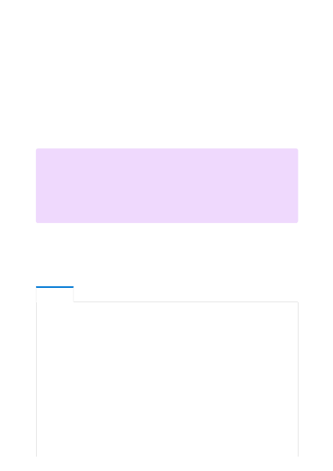

Each Cognitive Services resource supports up to 100 virtual network rules, which may be
combined with IP network rules.
To apply a virtual network rule to a Cognitive Services resource, the user must have the
appropriate permissions for the subnets being added. The required permission is the
default Contributor role, or the Cognitive Services Contributor role. Required permissions
can also be added to custom role definitions.
Cognitive Services resource and the virtual networks granted access may be in different
subscriptions, including subscriptions that are a part of a different Azure AD tenant.
You can manage virtual network rules for Cognitive Services resources through the
Azure portal, PowerShell, or the Azure CLI.
1. Go to the Cognitive Services resource you want to secure.
2. Select the RESOURCE MANAGEMENT menu called Virtual network.
3. Check that you've selected to allow access from Selected networks.
4. To grant access to a virtual network with an existing network rule, under
Virtual networks, select Add existing virtual network.
Required permissions
７
Note
Configuration of rules that grant access to subnets in virtual networks that are a
part of a different Azure Active Directory tenant are currently only supported
through PowerShell, CLI and REST APIs. Such rules cannot be configured through
the Azure portal, though they may be viewed in the portal.
Managing virtual network rules